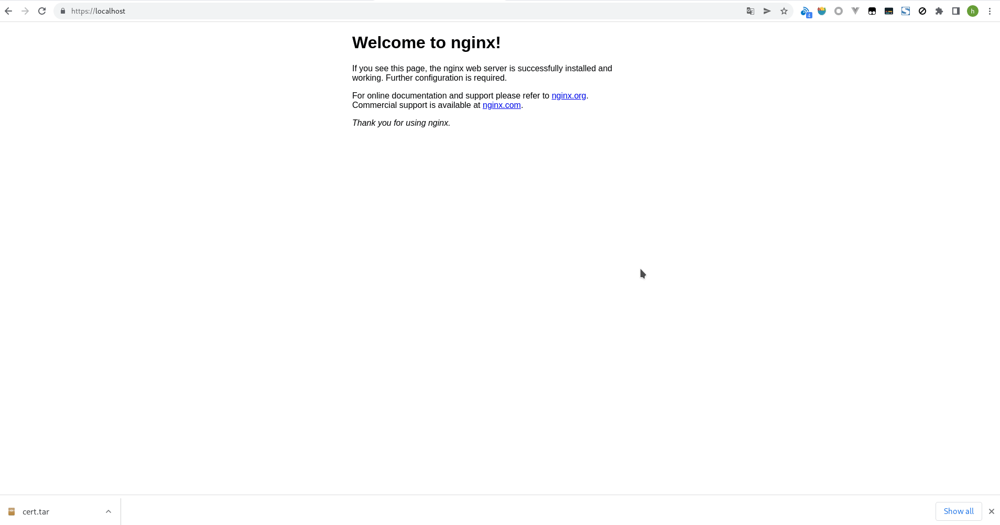

server {
listen 443 ssl;
# 证书配置如下2行
ssl_certificate /etc/nginx/server.crt;
ssl_certificate_key /etc/nginx/server.key;
server_name *.localhost;
location / {
root /usr/share/nginx/html;
index index.html index.htm;
}
}
添加 ca.crt 到浏览器证书列表后浏览器会信任自前面证书
